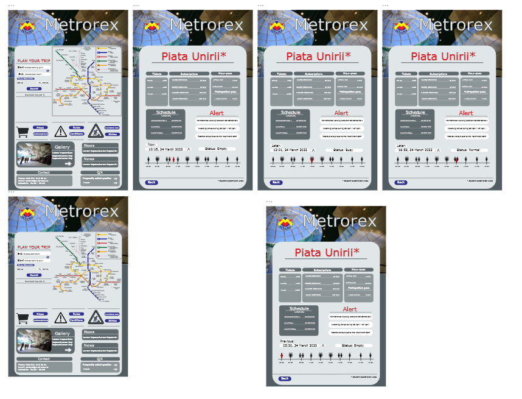

Univeristy Courses

By applying the basic prciples of Graphic Design I created a poster that brings awarness of the Domestic Abuse victims
During this course we had to recreate the HUD of a FPS game and a webpage layout. By applying both basic of Graphic Priciples and the Design Thinking method I recreate two prototypes that satisfy the needs of the user.

Crisis 3 Remade HUD
Metrorex Webpage Remade
During this course I created a webpage using HTML and CSS.


During this course I created a prototype for an phone app that has the purpose to bring more awarness to the animal wellfare .

University Projects
During this project I was mainly in charge of the UI/UX, Webpage and the One pager. Using my past experinces and skill I came with these final products even if the project took just one week.